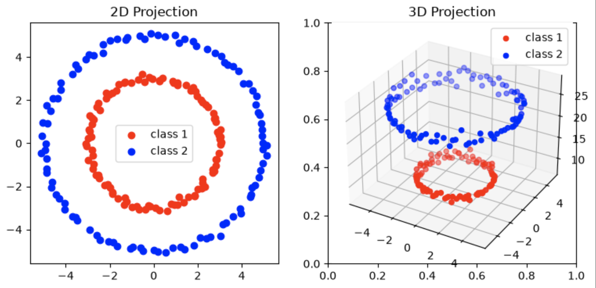
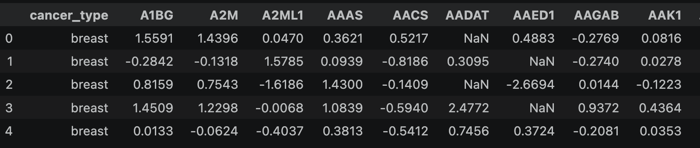
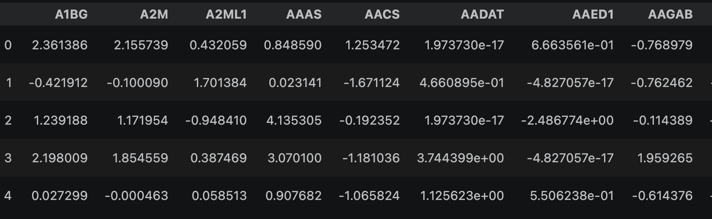
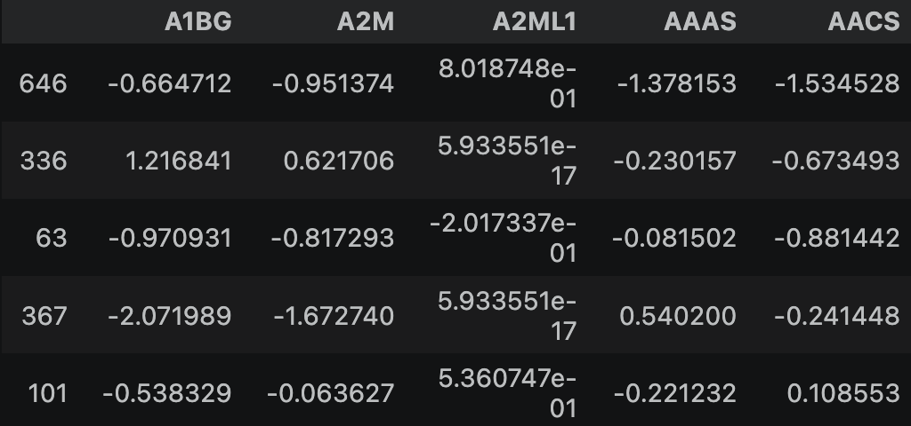
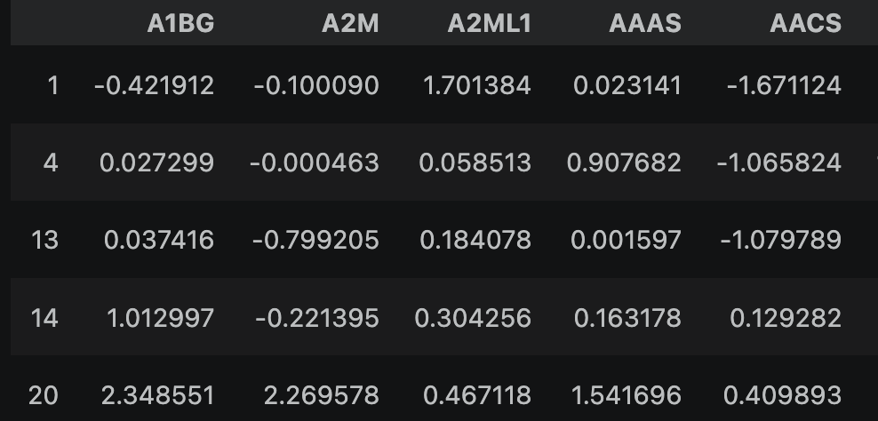
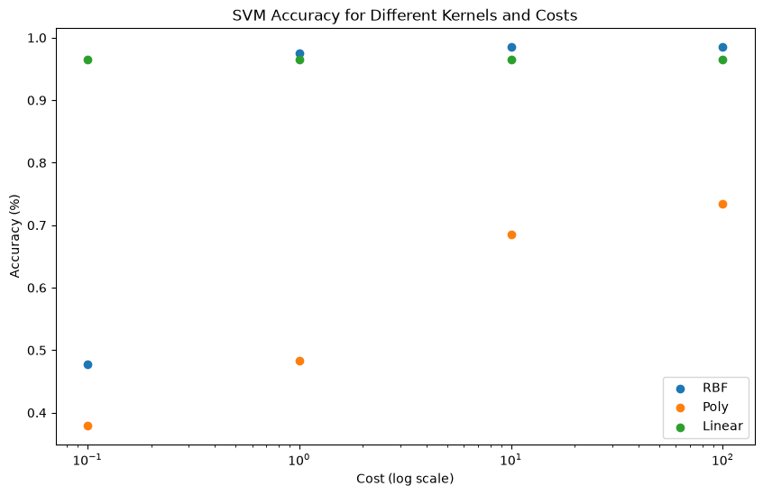
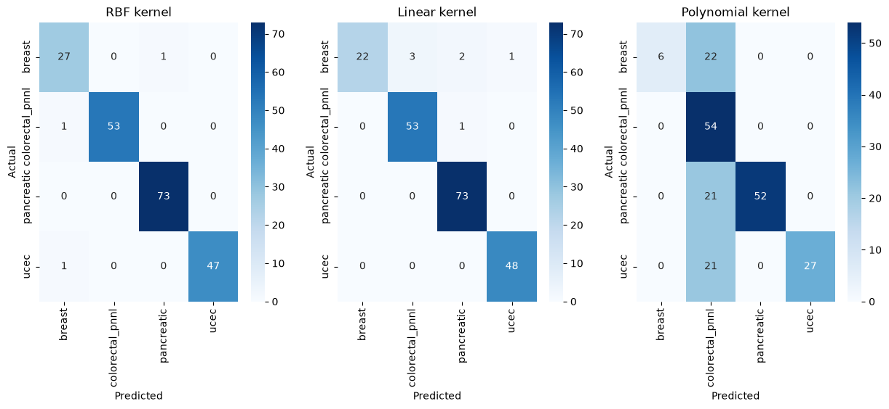

Support Vector Machines
Overview
Support Vector Machines are a type of supervised machine learning algorithm used to classify datasets into 2 classes (or stacking multiple for multi-class classifiers) using a linear boundary that maximizes the distance between each class and the
decision boundary (a line, plane, or hyperplane depending on the dimensions of the data). The name comes from the term for the training data points adjacent to the boundary- as these points are in the coordinate space, they are technically
vectors, and termed the "support" vectors, which are used to define the boundary.
SVMs are fundamentally linear separators as defined by the boundary equation they produce: f(x)=wx+b, where w is the weight vector, x is the input data point vector, and b is the bias, as in a standard
linear equation. This equation defines the boundary as a line/plane/hyperplane, so when a data point x is evaluated, f(x) is positive for points on side of the boundary, and negative for the other side.

Sometimes, the data cannot be linearly separated in its feature space. In such nonlinear cases, the data can be mapped to a higher-dimensional space where a linear separation is possible; this linear boundary
is then projected back into the original space, creating a non-linear boundary in the original space. Unfortunately, the dimension increase required to achieve a linear boundary can be extremely computationally intensive,
as each data vector must be transformed by a mapping function (usually written as ϕ(x)) into a potentially much larger vector. As vector math operations scale with the dimensionality of the vectors,
the computational cost can quickly get out of control as the boundary function requires a vector dot product, which would be extremely expensive in the higher-dimensional space.
Another parameter available is "Cost", which controls how much the model penalizes misclassification during training. This allows control of the bias/variance tradeoff, i.e. underfitting/overfitting.
In this section, an SVM is trained to classify cancer types based on proteomic profile, a set of high-dimensional assays describing how much of many different proteins are present in the tissue sample.
There are four cancer types in the dataset from distinct anatomical locations- breast, uterine, pancreatic, and colorectal.
Data Preparation
SVMs can only work on scaled, numeric data, as they must calculate distances between vectors in a coordinate space. As such, any NaN values must be replaced or removed, and categorical features
must be converted to numeric (e.g. through one-hot encoding). In this section, a cancer-type classified is built from proteomic assay values. Most of this data is numeric, but many rows have NaN values. Because
not all proteins are measured in each assay, nearly all rows have missing values as there are nearly 12,000 individual protein features.
   
To prepare the PDC clinical data, first all the categorical columns were removed except for the label, cancer_type, which are separated to a different data frame. Then the data was
standardized so any larger values do not dominate the distance calculations. Then, NaN values were imputed using the mean of the present values in each feature.
Code
The code as a Juptyter notebook can be found here. The HTML Jupyter notebook is here.Results
Despite the data having 11,937 features, the SVM models peformed very well. This table shows the accuracy for 3 different kernels across several cost values:| Kernel | C = 0.1 | C = 1 | C = 10 | C = 100 |
|---|---|---|---|---|
| RBF | 0.4778 | 0.9754 | 0.9852 | 0.9852 |
| Polynomial | 0.3793 | 0.4828 | 0.6847 | 0.7340 |
| Linear | 0.9655 | 0.9655 | 0.9655 | 0.9655 |
Plotting this, it can be seen clearly that the RBF kernel achives the best performance when cost is sufficient, linear is extremely stable for any cost, and the poly kernel performs poorly even with higher cost.

{kind=link}

The kernel performances are quite distinct. The highly stable performance of the linear kernel despite any cost change suggests that there is a clear linearly separable decision boundary inherent in the data. However, the RBF kernel performs slightly better with a sufficient cost, suggesting that there is some non-linearity to capture in the boundary. The poly kernel performs poorly, underfitting substantially even with high cost. Tuning other hyperparameters would probably be necessary to develop performance with the poly kernel.
Since the linear kernel performed well, some model interpretation can be done through examining the weights and sorting them by their absolute values to identify the most important features. The top-10 proteins by significance are:
| Feature | Weight | Abs Weight |
|---|---|---|
| CRYBG1 | -0.010313 | 0.010313 |
| VCAM1 | -0.008583 | 0.008583 |
| RETN | -0.008257 | 0.008257 |
| PROM1 | -0.007319 | 0.007319 |
| SUB1 | -0.006314 | 0.006314 |
| ARMT1 | -0.006297 | 0.006297 |
| FABP6 | 0.006165 | 0.006165 |
| CPB1 | -0.006139 | 0.006139 |
| EGFR | -0.005981 | 0.005981 |
| CLIC6 | -0.005962 | 0.005962 |
As expected, with so many complex and correlated dimensions, the individual features aren't extremely highly-weighted, but perhaps there is some biological interest to be found in which have the most significance in the model.
Conclusions
While this classifier is quite accurate, that is not exactly unexpected. As tissues in the body express highly varied and differing sets of proteins according to their function, this classifier could simply be identifying different tissue regions instead of cancer presence, per se. If proteomic assays for healthy tissues were available for comparison, a classifier to diagnose the cancer types could be constructed, possibly a more interesting application. However, the high accuracy with relatively simple models (each took less than a second of wall-clock time to train), suggests that there is indeed much useful signal in protein profiles, and that imputing missing values with the column means did not create excessive noise. If performance dropped, or was found to be more challenging in more advanced classfication, e.g. cancer subtypes distinction for the same tissues, there may be more to explore with dimensionality reduction, feature selection, and imputation techniques.Looking at the most significant proteins in the weights table above could perhaps drive some investigation into proteins and their roles in various cancers. For example, the top protein, CRYBG1, is known to help maintain intra-cellular rigidity, and loss of this function is associated with tumor growth and cancer spread, as the loss of its structure can allow the cell to migrate through tissues and invade other parts of the body.